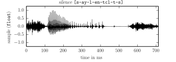

This work is licensed under a Creative Commons Attribution 3.0 Unported License (CC BY 3.0). You are free to share -- to copy, distribute and transmit the work -- and to remix -- to adapt the work -- under the condition that the work is properly attributed to its author.
This lab session is dedicated to the compression of speech by linear prediction.
These algorithms tend to behave differently on different kind of phones (the elementary phonetic units). In particular, the distinction of voiced phones -- for which the vocal cords vibrate -- and unvoiced phones -- for which they do not -- matters. We will therefore use audio speech samples from the TIMIT database, whose phonetic content has been already analyzed and indexed.
TIMIT uses its own alphabet of phonetic symbols, made of ASCII letters (refer to the appendix for details).

You may also find convenient to use records on your own voice. In that case, export it as single-channel, 16-bit / 16 kHz Linear PCM data to conform to the format used by TIMIT audio data.
In the context of audio compression, prediction is used to transform an audio signal into a prediction error, the difference between the signal and the output of a reference model. If the model is accurate, the prediction error is smaller and less structured than the original signal and may be quantized with a reduced number of bits.
We will only study the signal to error transformation (or analysis filter) and the inverse transformation (or synthesis filter) in this section and will not explicitely introduce the extra quantization (even though we still refer to the short-term predictor as a quantizer).
In the sequel, we assume that the following objects have been imported:
from numpy import *
from audio.filters import FIR, AR
from audio.lp import lp
from audio.quantizers import QuantizerA skeleton for our short-term predictor quantizer class is:
class STP(Quantizer):
"Short-Term Predictor"
def __init__(self, order=16):
self.fir = FIR(a=r_[1.0, zeros(order)])
self.ar = AR(a=zeros(order))
self.order = order
def encode(self, data):
...
def decode(self, data):
...The constructor is the only STP method implemented so far: when a call such as stp = STP() is performed, an instance of short-term predictor is created and bound to stp, then the constructor initializes instances of FIR and AR filters and stores them in stp.
Analysis. The encode shall implement the analysis stage: given a new frame of numerical data, it shall compute the "best" approximation of the data as a linear combination of its past values (with the lp function of the audio.lp module). Then, it shall configure the analysis filter accordingly, feed him the input data, read the corresponding error output and return a pair of prediction coefficients and error.
def encode(self, data):
order = min(self.order, len(data) - 1)
a = lp(data, order=order)
self.fir.a[:] = ?
error = self.fir(data)
return (a, error) How should we configure the coefficients of the FIR filter to make it output the prediction error ? Replace the question mark accordingly in the above code.
Prediction Error. Select the audio data of an utterance of the TIMIT database. Split this data into frames of 20 ms and compute the error after a prediction of order 16. Plot the original data and the error on the same graph. Does the error look like a white noise for every phone in the utterance ?
Synthesis. The predictor decode method implements the synthesis stage; it is called with a pair of arguments: a list of filter coefficients and an array of error data, produced during the analysis stage. It configures the AR filter with the new filter coefficients, inputs the error data into the filter and returns the filter output.
def decode(self, data):
a, error = data
self.ar.a[:] = ?
return self.ar(error)How should the synthesis filter be configured so that its transfer function it the inverse of the transfer function of the analysis filter ? Replace the question mark accordingly.
Reconstruction Error. What should be the order of magnitude of the error between the input and the output of the short-term predictor ?
Measure this error when the input run through the TIMIT database. What do you notice ? Can you provide an explanation for this discrepancy ? Check the relevance of this explanation. Implement a modification of the analysis stage that solves this issue.
Linear Predictive Coding (LPC). Select the audio data of an utterance of the TIMIT database and perform a (pure) linear predictive coding: synthesize the output with the prediction error frames replaced by frames of noise of the same energy. Can we still understand the original sentence despite the noisiness ?
Repeat the experiment with a sentence uttered by several speakers (such as "she had your dark suit in greasy wash water all year"). Is there a distinct characteristic of the speaker voices that has not been preserved by the coding ?
A long-term prediction can address some of the limitations of the short-term analysis demonstrated previously. We will therefore develop a long-term predictor quantizer class whose skeleton is given by:
class LTP(Quantizer):
def __init__(self, order):
self.fir = FIR(a=r_[1.0, zeros(order)])
self.history = zeros(order)
self.ar = AR(a=zeros(order))
self.order = order
def encode(self, frame):
...
def decode(self, data):
...Analysis. The long-term prediction attempts to match a new frame of signal values by scaled version of frames of the same size in the recent history of the signal. The temporal shift, counted in samples, is the offset, and the scale factor is the gain.
If only a fixed-size array history of past values of the signal is known, what range of offsets can we try to match the new frame against ? If we intend to detect patterns whose period may be as low as \(50\) Hz, what should therefore be the minimal length order of the history array ?
Show that if an offset is selected, the best gain -- for a quadratic error criterion -- can be determined analytically. Use this result to implement the function ltp_parameters that computes the optimal offset and gain, with a loop over all possible offsets.
def ltp_parameters(history, frame):
...
return offset, gainComplete the implementation the encode method of LTP that computes for each new frame the ltp parameters and the prediction error using a FIR prediction error filter:
def encode(self, frame):
offset, gain = ltp_parameters(self.history, frame)
...
self.fir.a[:] = ?
error = self.fir(frame)
self.history = r_[self.history[len(frame):], frame]
return (offset, gain), errorPrediction Error. Go back the the prediction error subsection of the short-term prediction section. Apply a long-term prediction analysis to the short-term prediction error with (sub-)frames of 5 ms and an order consistent with the prediction of \(50\) Hz patterns. Plot the original audio data, the short-term prediction error and the combined short-term and long-term prediction error on the same graph. Did the last stage improve the prediction ?
Synthesis. Implement the long-term prediction synthesis within the following code template:
def decode(self, data):
(offset, gain), error = data
...
self.ar.a[:] = ?
return self.ar(error) Reconstruction Error. Can the synthesis filter be unstable ? For what values of the offset and the gain ? Adapt the analysis stage to ensure that the synthesis stability is ensured.
Linear Predictive Coding (LPC). Go back to the short-term prediction LPC subsection and chain a short-term prediction on frames of \(20\) ms and a long-term prediction on suframes of \(5\) ms. Then, replace those subframes by random noises of equivalent energy and perform the synthesis. Listen to the synthesized signals and compare with the original signals and the signals previously synthsizes. Did the long-term prediction improve the quality ?
Phone symbols: aa ae ah ao aw ax ax-h axr ay b bcl ch d dcl dh dx eh el em en eng epi er ey f g gcl h# hh hv ih ix iy jh k kcl l m n ng nx ow oy p pau pcl q r s sh t tcl th uh uw ux v w y z zh
Use the audio.index module to display these symbols in context:
>>> import audio.index
>>> audio.index.search("ay")
0. ay (like [l-ay-kcl]).
1. ay (night [n-ay-q]).
2. ay (rise [r-ay-z]).
3. ay (like [l-ay-kcl-k]).
4. ay (betide [bcl-b-iy-tcl-t-ay-dcl]).
5. ay (wine [w-ay-ng]).
...